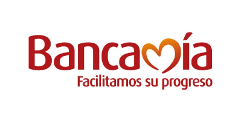

¿Qué es el Ingreso Solidario?
Es un esquema mediante el cual se estrega una
transferencia monetaria en favor de los hogares
situación de pobreza y vulnerabilidad que
no sean beneficiarios de programas sociales del Estado.
Los hogares en condición de pobreza
y vulnerabilidad, afectados en sus
ingresos como consecuancia de la pandemia del coronavirus
, que no hagan parte de los programas sociales
"Familias en Acción" , "Colombia Mayor", "
Jovenes en Acción" y "Devolución del IVA"
podrán acceder a esta medida social.
conocer las etapas de entrega

Etapas de Entrega
Etapa 1
Desde el 1 de Abril

Etapa 2
9 de Abril al 18 de Abril
Bancos Autorizados


Etapa 3
18 de Abril al 25 de Abril

Preguntas Frecuentes

Preguntas Frecuentes
1
Yo había salido como beneficiaria en la primera fase y ahora no aparezco
en el listado de beneficiarios ¿Es decir, ya no recibiré el beneficio?
Estamos actualizando el listado de beneficiarios que recibieron el giro.
Si encontró su nombre en la primera etapa y está plenamente
identificado, no ha perdido su beneficio.
2
¿Por qué no aparezco ahora en el listado de ingresosolidario.prosperidadsocial.gov.co?
Estamos actualizando el listado de beneficiarios que recibieron el giro.
Si encontró su nombre en la primera etapa y está plenamente
identificado, no ha perdido su beneficio.
Ver más

3
¿Qué debo hacer porque me llegó el mensaje de que soy beneficiario y no he recibido el pago?
Si usted fue informado de que es beneficiario del programa mediante un mensaje de texto
enviado por la entidad financiera en la cual tiene una cuenta o depósito activo
comuniquese con esa entidad financiera para averiguar cómo acceder a los recursos del ingreso Solidario.
Si usted no tiene una cuenta o depósito con el sistema financiero, y es elegido
dentro del programa ingreso Solidario, pronto recibirá un mensaje con
las instruccion es para hacer la apertura de una cuenta digital.
4
Consulté en la página web y soy beneficiario, pero aún
no me han llamado ni he recibido mensaje de texto ¿Qué debo hacer?
Si used encontró su nombre y cédula en la base de beneficiarios y no ha recibido un mensaje de texto, significa que hace parte
de un ciclo posterior de pagos.Durante esta etapa, las entidades financieras se contactarán con usted
para darles las indicaciones de cómo recibir el giro o hacer la apertura de un depósito simplificado a través de su celular
Ver más

5
¿Qué debemos hacer los que somos beneficiarios, pero no tenemos celular o cambiamos de número?
Prosperidad Social está trabajando con diferentes organizaciones y
fuentes de datos para ubicarlo y contactarlo.
Lo invitamos a consultar periódicamente la página.
¿Tiene más preguntas?
Por favor no dudes en contactarnos para poderte dar la información que necesites
Contáctanos

Prosperidad Social
Carrera 7 No 27 - 18 / Bogotá D.C, Colombia
Código Postal:110311
Horario de Atención:8:00 a.m - 2:00 p.m.
Linea Gratuita Nacional:01-8000-951100
Linea de atención Paga:(1)5188811
Conmutador:(57+)5142060
ingreso.solidario@prosperidadsocial.gov.co
 Inicio
¿Qué es?
Inicio
¿Qué es?
 Entrega
Consultar
Consulta tu estado del
Ingreso
Solidario
Entrega
Consultar
Consulta tu estado del
Ingreso
Solidario